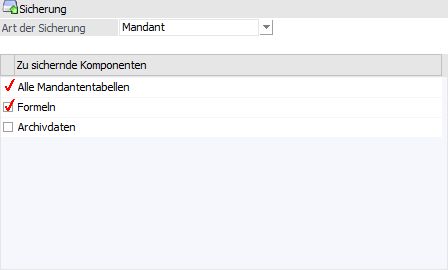
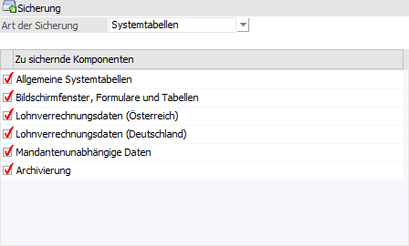
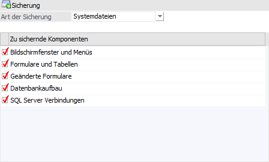
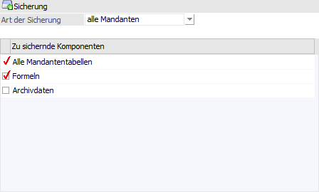
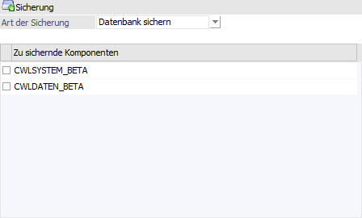

Im ersten Schritt wird gewählt, welche Art von Daten gesichert werden sollen. Die Entscheidung wird hierbei mit Hilfe der Auswahlliste "Art der Sicherung" getroffen wird.
Achtung
Die Sicherung bezieht sich immer auf die am Server gespeicherten Daten bzw. Einstellungen. Clientseitige Änderungen werden dabei nicht berücksichtigt!

Ø Art der Sicherung
Mit Hilfe dieser Auswahlliste wird entschieden, welche Daten grundsätzlich gesichert werden soll. Abhängig von der Auswahl können in der nachfolgenden Tabelle weitere Auswahlen getroffen werden.
Sicherung "Mandant"

Mit dieser Option können einzelne Mandanten gesichert werden. Wird diese Option ausgewählt, können zusätzliche Einstellungen vorgenommen werden:
Ø Formeln
Für Lohn-Mandanten gibt es zusätzlich die Checkbox "Formeln" zur Auswahl. Wird diese angehakt, werden auch die LOHN-Formeln aus den mandantenunabhängigen Daten mit gesichert. Beim Rücksicheren einer solchen Mandantensicherung kann entschieden werden, ob die LOHN-Formeln in die mandantenunabhängigen Daten zurückgesichert werden sollen oder nicht.
Ø Archivdaten
Wenn diese Option aktiviert wird, so wird nicht nur das Autoarchiv, sondern das gesamte Archiv, welches bei diesem Mandanten gespeichert ist, mit in die Sicherungsdatei übertragen. Wenn die Option deaktiviert bleibt (Standardeinstellung), dann wird nur das Autoarchiv mitgesichert.
Sicherung "Systemtabellen"

Mit dieser Option können Systemeinstellungen gesichert werden, wobei zusätzlich entschieden werden kann, welche Komponenten tatsächlich gesichert werden sollen. Dabei stehen wieder folgende Optionen zur Verfügung:
ü Allgemeine Systemtabellen
Diese
beinhalten die Benutzer, die Datenbankverbindungen, das Auditprotokoll -
Funktionen, die Lizenzen, die MSM-Tabelle etc.
ü Bildschirmfenster, Formulare und
Tabellen
Hier sind die individuell eingestellten Fenster, die geänderten
Formulartitel und die individuellen Tabelleneinstellungen gespeichert.
Hinweis
Formularänderung als solche können über die Systemdatei (Bereich "Geänderte Formulare") gesichert werden.
ü Lohnverrechnungsdaten
(Österreich)
Hier werden die Basisdaten für die österr. Lohnverrechnung (alle
Beitragsgruppen, Titel etc.) gespeichert.
ü Lohnverrechnungsdaten
(Deutschland)
Hier werden die Basisdaten für die deutsche Lohnverrechnung
(Krankenkassen etc.) gespeichert.
Hinweis
Die Applikation WinLine LOHN D wird nicht mehr unterstützt.
ü Mandantenunabhängige Daten
In
diesen Tabellen werden alle Daten, die für alle Mandanten zur Verfügung stehen
(PLZ, BLZ, LIST-Definitionen, EXIM-Vorlagen, Formeln etc.) verwaltet.
Hinweis
Werden die Archivdokumente in der SQL-Datenbank und dort in der Systemdatenbank gespeichert (Standard), so beinhalten die mandantenunabhängigen Daten auch die Archivdokumente.
ü Archivierung
In dieser Tabelle
sind die Archivstammdaten und Einstellungen (Schlagwörter und Formulartypen)
gespeichert.
Sicherung "Systemdateien"

Mit dieser Sicherungsart können die Systemdateien, welche sich am WinLine Datenserver befinden, gesichert werden:
ü Bildschirmfenster und Menüs
In
dieser Datei werden die (durch das Customizing Tool Kit) angepassten Fenster und
Menüs gespeichert (Datei MESODISP?.MESO)
ü Formulare und Tabellen
In
dieser Datei befinden sich die Originalformulare und die Tabellendefinitionen
(MESOREPO?.MESO).
ü Geänderte Formulare
In dieser
Datei werden die geänderten Formulare abgespeichert (MESOFORM?.MESO).
ü Datenbankaufbau
Hier werden die
Strukturen der Datenbank gespeichert (MESOTABLES.MESO).
ü SQL Server Verbindungen
Das ist
die Datei, in der steht, auf welchem Server die Systemtabellen gespeichert sind
(MESOSERVERCONNECT.MESO).
Sicherung "alle Mandaten"

Mit dieser Option können mehrere bzw. alle Mandanten gleichzeitig gesichert werden. Zusätzlich können folgende Einstellungen vorgenommen werden:
Ø Formeln
Für Lohn-Mandanten gibt es zusätzlich die Checkbox "Formeln" zur Auswahl. Wird diese angehakt, werden auch die LOHN-Formeln aus den mandantenunabhängigen Daten mit gesichert. Beim Rücksicheren einer solchen Mandantensicherung kann entschieden werden, ob die LOHN-Formeln in die mandantenunabhängigen Daten zurückgesichert werden sollen oder nicht.
Ø Archivdaten
Wenn diese Option aktiviert wird, so wird nicht nur das Autoarchiv, sondern das gesamte Archiv, welches bei diesem Mandanten gespeichert ist, mit in die Sicherungsdatei übertragen. Wenn die Option deaktiviert bleibt (Standardeinstellung), dann wird nur das Autoarchiv mitgesichert.
Sicherung "Datenbank sichern"

Mit dieser Option können komplette SQL-Datenbanken gesichert werden, wobei nur jene Datenbanken gesichert werden können, auf die aus dem WinLine ADMIN zugegriffen werden können (d.h. der WinLine ADMIN muss auf dem Rechner ausgeführt werden, auf dem auch der SQL-Server mit seinen Datenbanken installiert ist) bzw. die im WinLine Programm eingebunden sind (also alle Datenbanken, die in den Datenbankverbindungen eingetragen sind, die Systemdatenbank und die Archivdatenbank).
Wenn diese Option ausgewählt wird, werden in der Tabelle "Zu sichernde Komponenten" alle Datenbanken angezeigt, die gesichert werden können, wobei die erste Datenbank automatisch aktiviert ist. Sollen mehrere Datenbanken gleichzeitig gesichert werden, müssen diese entsprechend markiert werden.
Durch Anklicken des Buttons "Vor" gelangt man in den nächsten Schritt. Alternativ hierzu können die Schritte über die Navigation gewählt werden.